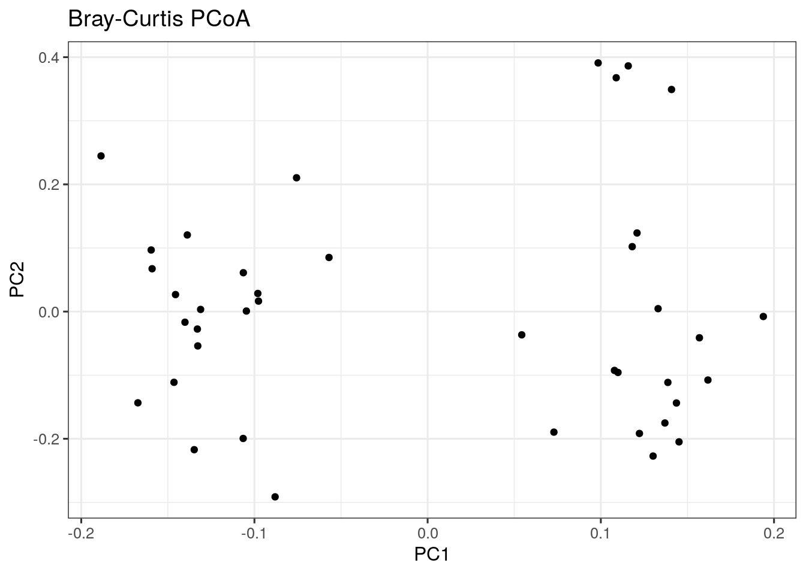
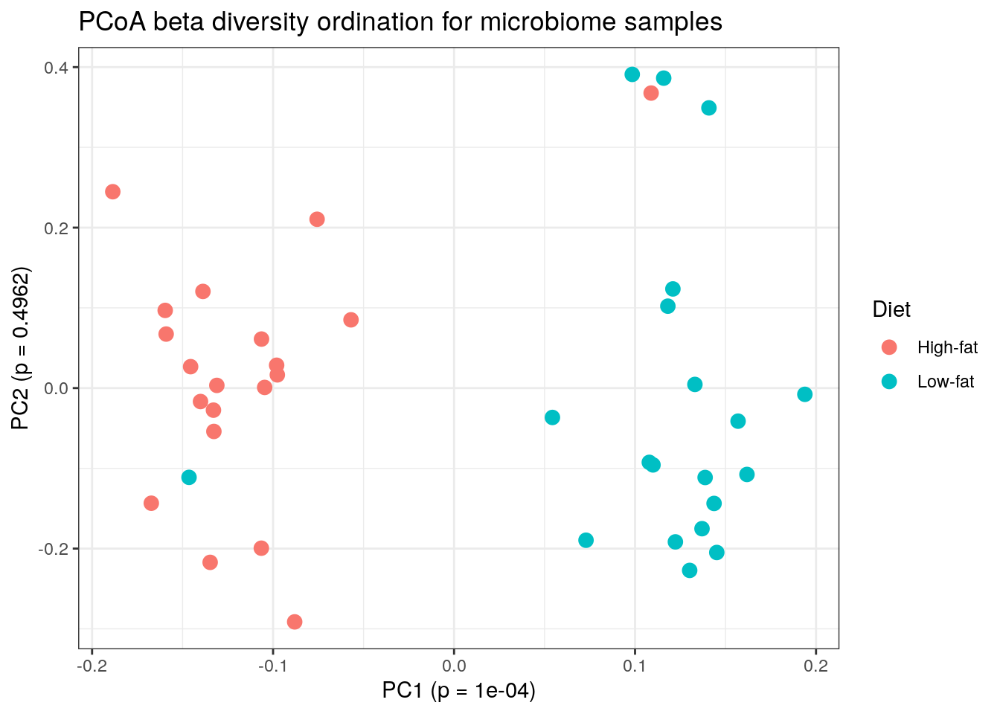

Chapter 6 Beta diversity
Beta diversity is another name for sample dissimilarity. It quantifies differences in the overall taxonomic composition between two samples.
Common indices include Bray-Curtis, Unifrac, Jaccard index, and the Aitchison distance. Each of these (dis)similarity measures emphasizes different aspects. For example, UniFrac incorporates phylogenetic information, and Jaccard index ignores exact abundances and considers only presence/absence values. For more background information and examples, you can check the dedicated section in online book.
6.1 Examples of PCoA with different settings
Beta diversity estimation generates a (dis)similarity matrix that contains for each sample (rows) the dissimilarity to any other sample (columns).
This complex set of pairwise relations can be visualized in informative ways, and even coupled with other explanatory variables. As a first step, we compress the information to a lower dimensionality, or fewer principal components, and then visualize sample similarity based on that using ordination techniques, such as Principal Coordinate Analysis (PCoA). PCoA is a non-linear dimension reduction technique, and with Euclidean distances it is is identical to the linear PCA (except for potential scaling).
We typically retain just the two (or three) most informative top components, and ignore the other information. Each sample has a score on each of these components, and each component measures the variation across a set of correlated taxa. The top components are then easily visualized on a two (or three) dimensional display.
Let us next look at some concrete examples.
6.1.1 PCoA for ASV-level data with Bray-Curtis
Let us start with PCoA based on a Bray-Curtis dissimilarity matrix calculated at Genus level abundances.
# Pick the relative abundance table
rel_abund_assay <- assays(mae[[1]])$relabundance
# Calculates Bray-Curtis distances between samples. Because taxa is in
# columns, it is used to compare different samples. We transpose the
# assay to get taxa to columns
bray_curtis_dist <- vegan::vegdist(t(rel_abund_assay), method = "bray")
# PCoA
bray_curtis_pcoa <- ecodist::pco(bray_curtis_dist)
# All components could be found here:
# bray_curtis_pcoa$vectors
# But we only need the first two to demonstrate what we can do:
bray_curtis_pcoa_df <- data.frame(pcoa1 = bray_curtis_pcoa$vectors[,1],
pcoa2 = bray_curtis_pcoa$vectors[,2])
# Create a plot
bray_curtis_plot <- ggplot(data = bray_curtis_pcoa_df, aes(x=pcoa1, y=pcoa2)) +
geom_point() +
labs(x = "PC1",
y = "PC2",
title = "Bray-Curtis PCoA") +
theme(title = element_text(size = 10)) # makes titles smaller
bray_curtis_plot
6.1.2 PCoA for ASV-level data with Aitchison distance
Now the same using Aitchison distance. This metric corresponds to Euclidean distances between CLR transformed sample abundance vectors.
# Does clr transformation. Pseudocount is added, because data contains zeros.
mae[[1]] <- transformCounts(mae[[1]], method = "clr", pseudocount = 1)
# Gets clr table
clr_assay <- assays(mae[[1]])$clr
# Transposes it to get taxa to columns
clr_assay <- t(clr_assay)
# Calculates Euclidean distances between samples. Because taxa is in columns,
# it is used to compare different samples.
euclidean_dist <- vegan::vegdist(clr_assay, method = "euclidean")
# Does principal coordinate analysis
euclidean_pcoa <- ecodist::pco(euclidean_dist)
# Creates a data frame from principal coordinates
euclidean_pcoa_df <- data.frame(pcoa1 = euclidean_pcoa$vectors[,1],
pcoa2 = euclidean_pcoa$vectors[,2])
# Creates the plot
euclidean_plot <- ggplot(data = euclidean_pcoa_df, aes(x=pcoa1, y=pcoa2)) +
geom_point() +
labs(x = "PC1",
y = "PC2",
title = "Euclidean PCoA with CLR transformation") +
theme(title = element_text(size = 12)) # makes titles smaller
euclidean_plot6.1.3 PCoA aggregated to Phylum level
We use again the Aitchison distances in this example but this time applied to the phylum level.
# Does clr transformation. Psuedocount is added, because data contains zeros.
se_phylum <- transformCounts(se_phylum, method = "clr", pseudocount = 1)
# Gets clr table
clr_phylum_assay <- assays(se_phylum)$clr
# Transposes it to get taxa to columns
clr_phylum_assay <- t(clr_phylum_assay)
# Calculates Euclidean distances between samples. Because taxa is in columns,
# it is used to compare different samples.
euclidean_phylum_dist <- vegan::vegdist(clr_assay, method = "euclidean")
# Does principal coordinate analysis
euclidean_phylum_pcoa <- ecodist::pco(euclidean_phylum_dist)
# Creates a data frame from principal coordinates
euclidean_phylum_pcoa_df <- data.frame(
pcoa1 = euclidean_phylum_pcoa$vectors[,1],
pcoa2 = euclidean_phylum_pcoa$vectors[,2])
# Creates a plot
euclidean_phylum_plot <- ggplot(data = euclidean_phylum_pcoa_df,
aes(x=pcoa1, y=pcoa2)) +
geom_point() +
labs(x = "PC1",
y = "PC2",
title = "Aitchison distances at Phylum level") +
theme(title = element_text(size = 12)) # makes titles smaller
euclidean_phylum_plot6.2 Highlighting external variables
We can map other variables on the same plot for example by coloring the points accordingly.
The following is an example with a discrete grouping variable (Diet) shown with colors:
# Adds the variable we later use for coloring to the data frame
euclidean_diet_pcoa_df <- cbind(euclidean_pcoa_df,
Diet = colData(mae)$Diet)
# Creates a plot
euclidean_diet_plot <- ggplot(data = euclidean_diet_pcoa_df,
aes(x=pcoa1, y=pcoa2,
color = Diet)) +
geom_point() +
labs(x = "PC1",
y = "PC2",
title = "PCoA with Aitchison distances") +
theme(title = element_text(size = 12)) # makes titles smaller
euclidean_diet_plotPCoA plot in some cases could also be overlayed with a continuous variable. (see example)
6.3 Estimating associations with an external variable
Next to visualizing whether any variable is associated with differences between samples, we can also quantify the strength of the association between community composition (beta diversity) and external factors.
The standard way to do this is to perform a so-called permutational multivariate analysis of variance (PERMANOVA). This method takes as input the abundance table, which measure of distance you want to base the test on and a formula that tells the model how you think the variables are associated with each other.
# First we get the relative abundance table
rel_abund_assay <- assays(mae[[1]])$relabundance
# again transpose it to get taxa to columns
rel_abund_assay <- t(rel_abund_assay)
# then we can perform the method
permanova_diet <- vegan::adonis(rel_abund_assay ~ Diet,
data = colData(mae),
permutations = 99)
# we can obtain a the p value for our predictor:
print(paste0("The test result p-value: ",
as.data.frame(permanova_diet$aov.tab)["Diet", "Pr(>F)"]))## [1] "The test result p-value: 0.01"The diet variable is significantly associated with microbiota composition (p-value is less than 0.05).
We can visualize those taxa whose abundances drive the differences between diets. We first need to extract the model coefficients of taxa:
# Gets the coefficients
coef <- coefficients(permanova_diet)["Diet1",]
# Gets the highest coefficients
top.coef <- sort(head(coef[rev(order(abs(coef)))],20))
# Plots the coefficients
top_taxa_coeffient_plot <- ggplot(data.frame(x = top.coef,
y = factor(names(top.coef),
unique(names(top.coef)))),
aes(x = x, y = y)) +
geom_bar(stat="identity") +
labs(x="", y="", title="Top Taxa") +
theme_bw()
top_taxa_coeffient_plotThe above plot shows taxa as code names, and it is hard to tell which bacterial groups they represent. However, it is easy to add human readable names. We can fetch those from our rowData. Here we use Genus level names:
# Gets corresponding Genus level names and stores them to top.coef
names <- rowData(mae[[1]])[names(top.coef), ][,"Genus"]
# Adds new labels to the plot
top_taxa_coeffient_plot <- top_taxa_coeffient_plot +
scale_y_discrete(labels = names) # Adds new labels
top_taxa_coeffient_plotThe same test can be conducted using the oridination from PCoA as follows:
bray_curtis_pcoa_df$Diet <- colData(mae)$Diet
p_values <- list()
for(pc in c("pcoa1", "pcoa2")){
# Creates a formula from objects
formula <- as.formula(paste0(pc, " ~ ", "Diet"))
# Does the permanova analysis
p_values[[pc]] <- vegan::adonis(formula, data = bray_curtis_pcoa_df,
permutations = 9999, method = "euclidean"
)$aov.tab["Diet", "Pr(>F)"]
}
# Creates a plot
plot <- ggplot(data = bray_curtis_pcoa_df, aes_string(x = "pcoa1", y = "pcoa2", color = "Diet")) +
geom_point(size = 3) +
labs(title = paste0("PCoA beta diversity ordination for microbiome samples"), x = paste0("PC1 (p = ", p_values[["pcoa1"]], ")"), y = paste0("PC2 (p = ", p_values[["pcoa2"]], ")")) +
theme_bw(12)
plot
There are many alternative and complementary methods for analysing community composition. For more examples, see a dedicated section on beta diversity in the online book.
6.4 Community typing
A dedicated section presenting examples on community typing is in the online book.